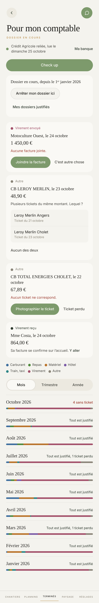

Proposé
Touchez les cartes : la vraie page suit.
Aujourd'hui

Ce qui change
- En tête, le point : combien de lignes attendent, sur une plage rouge, ou Tout est justifié en vert. La banque et sa lecture sont dessous.
- Check up est le seul bouton plein, collé en bas. Les boutons des cartes sont cernés.
- Chaque carte montre en grand le nom et le montant ; ce qui manque est écrit en rouge, avec son signe.
- Sous chaque mois, ce qui sort en rouge et ce qui entre en vert. La barre de couleurs est plus épaisse.
- Arrêter mon dossier vient après les mois, et dit d'avance pourquoi il attend.
- Le relevé : les totaux en grand, un point de couleur par ligne, un signe par pièce.
- Une facture ou un ticket qui ne tombe pas sur le montant de la ligne montre l'écart avant d'être joint. Aujourd'hui, l'appli le joint sans rien dire.
- Mes dossiers : l'année se change avec deux flèches, comme le mois de Terminés, et le bilan du comptable est juste sous le nom du dossier. Trois vrais boutons, et le lien du comptable sans sa longue adresse.
Ce qui ne bouge pas
- Les mots de l'appli, les couleurs des catégories, Ticket perdu annoncé avant de valider.
- Rien ne se range tant qu'une ligne attend. Un ticket se délie d'un appui. Les dossiers sont gardés dix ans.
À trancher
- Un virement reçu se règle dans sa carte : choisir la facture (même payée en partie), joindre une facture faite hors d’Atlas, ou dire ce que c’est. Aujourd’hui la carte envoie vers l’accueil, où rien n’apparaît quand aucune facture ne fait le montant : le dossier ne peut plus se ranger.
- Une pièce qui ne tombe pas juste peut se joindre quand même (un acompte, deux factures pour un virement) : l'écart reste écrit sur le relevé et chez le comptable.
- Les cinq réponses d’un virement reçu : un remboursement, mon argent perso, un prêt, une aide ou une subvention, entre mes comptes.
- Le filtre Sans ticket s'appelle À justifier : il compte aussi le virement reçu et le virement sans facture.
- Sans banque, Check up disparaît (il n'aurait rien à vérifier) et Relier ma banque devient le bouton plein.